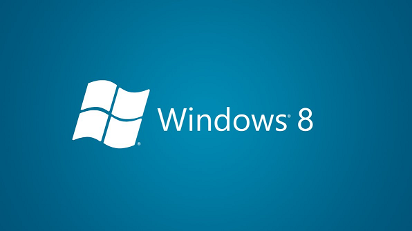

Windows 8 and JavaScript

No page navigation
- Global scope never resets
- Complex apps need multiple scripts
- JavaScript has global scope and function scope
// modules
(function() {
// namespaces
MyStuff.DoSomething();
})();
WinJS Namespace helper
WinJS.Namespace.define("Otc.Utility",
{
bigZero: function () { return 0; }
});
Exporting from a Module
(function () {
function privateImpl() { };
function publicThing() { };
WinJS.Namespace.define("Otc.Utility",
{
publicThing: publicThing
});
})();
Modules and Parameters
- For clarity and performance
(function (global, undefined) {
// ...
})(this);
Class helpers
var Point = WinJS.Class.define(
function (x, y) {
this.x = x;
this.y = y;
},
{
add: function (p) {
return new Point(this.x + p.x, this.y + p.y);
}
}
);
Mixins
- Adds methods to a class prototype
var PointEx = WinJS.Class.mix(Point, {
format: function () {
return this._point.x + ":" + this._point.y;
}
});
WinJS.Application
WinJS.Application.start();
Promises
- Nearly everything is (and should be) async
- Callbacks and event handlers
- A promise is an object that is a promise for a later value
WinJS.xhr({ url: "http://..." })
.then(function (result) {
});
Controls
- WinJS controls add behavior to DOM elements
- Declarative or programmatic
- Accessed as winControl on DOM element
<div data-win-control="WinJS.UI.AppBar">
<!--...-->
</div>
Data binding
- One way binding
- Declarative or programmatic
- Requires observables objects
<div id="output" data-win-bind="innerText:productName">
</div>
Templates
- Declarative and Programmatic
- Individual nodes and hierarchical
<div data-win-control="WinJS.Binding.Template">
<p data-win-bind="innerHTML:productName"></p>
</div>
Navigation
- Generally single page
- State and scripts stay around
- Navigate fragments
WinJS.Navigation.addEventHandler("navigated", navigated);
WinJS.Navigation.navigate("/html/home.html");
function navigated(e) {
WinJS.UI.Fragments.clone(e.detail.location, e.detail.state)
.then(function(frag){
var host = document.getElementById("content");
host.innerHTML = "";
host.appendChild(frag);
});
}
What about other libraries?
- They all just work
- jQuery
- jQuery UI
- YUI
- Raphael
- Underscore
- Etc...
Things That Don't Work
- XHR is slightly different
- Security is different
- Web Content versus Local Content
Summary
- WinJS is a library for desktop applications
- Use as many pieces as you need
- Mix in other libraries, too